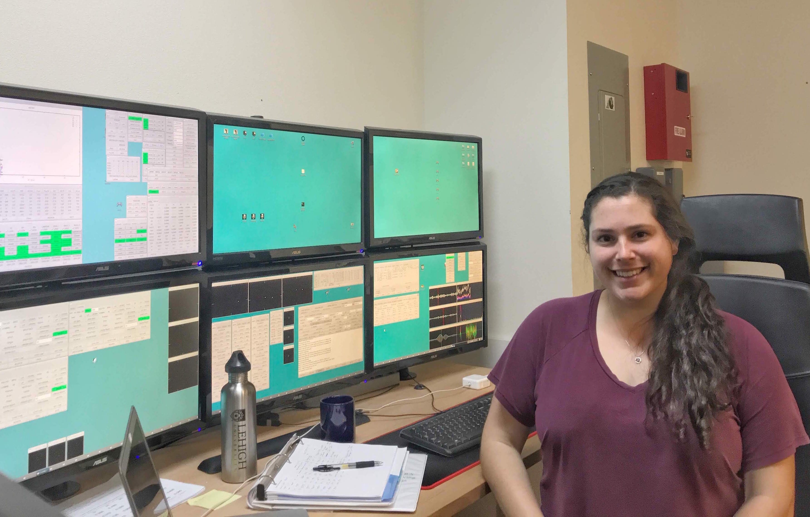
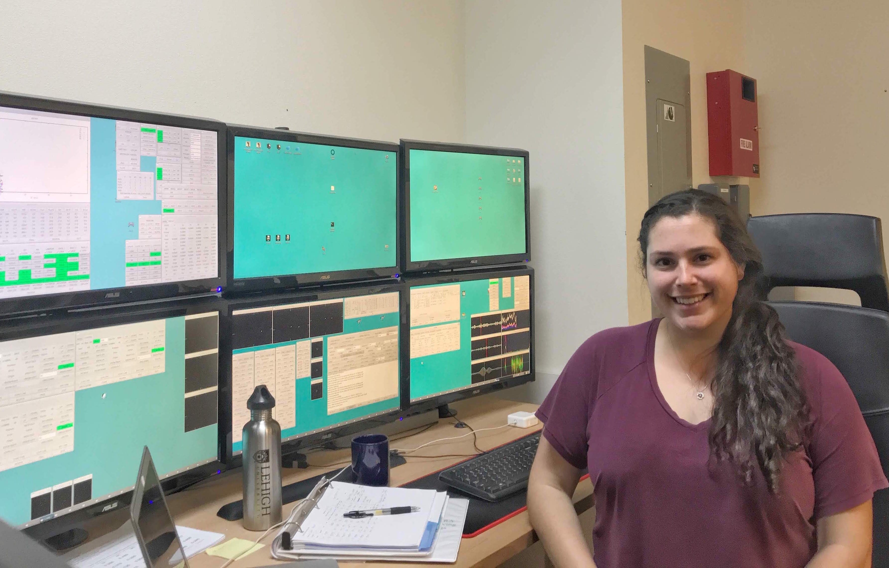

Hello! I am a sixth year astronomy graduate student and PhD candidate at Georgia State University. I work with Dr. Doug Gies to measure the orbits and determine the fundamental parameters of visual & spectroscopic binary stars.
I am currently the president of AstroPAL, a mentoring group for astronomy grad students at GSU. I was also a lab TA for the intro astronomy classes.
In my spare time, I enjoy playing tennis, going to music concerts, biking, and traveling! I also teach spin classes at the gym.
 

Education:
PhD in Astronomy - Georgia State University, expected May 2020.MS in Physics - Georgia State University, December 2017.
BS in Astrophysics - Lehigh University, May 2014.
Contact:
Email: kathryn [dot] v [dot] lester [at] nasa [dot] govPronouns: She, Her, Hers